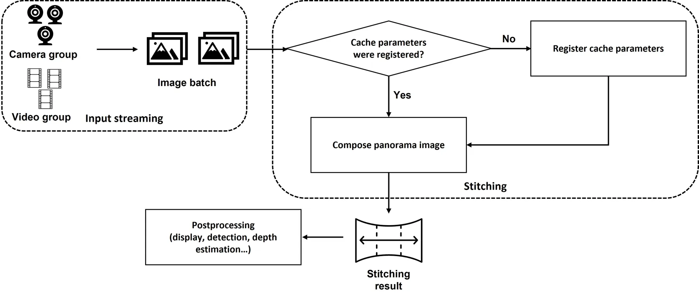
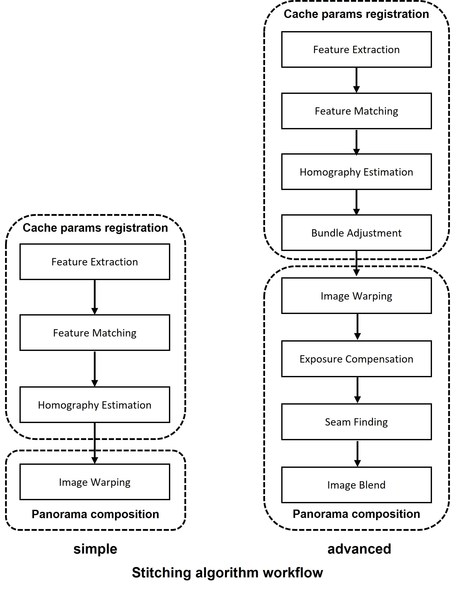
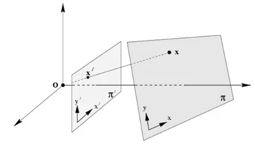
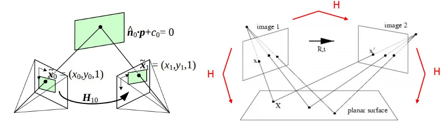
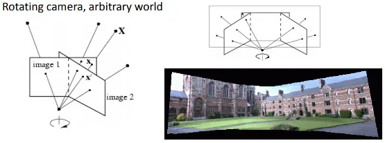
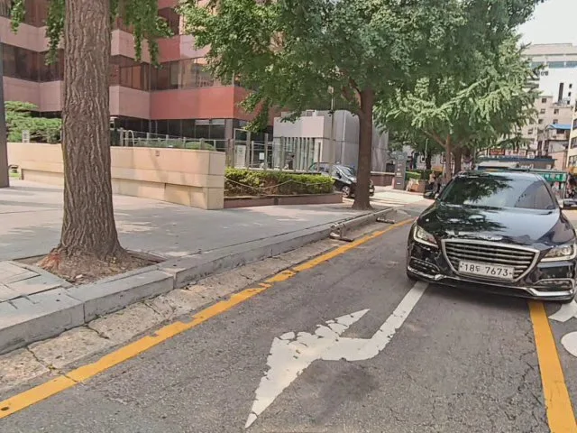
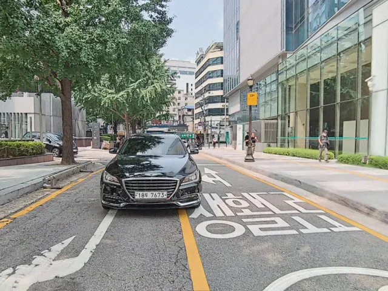
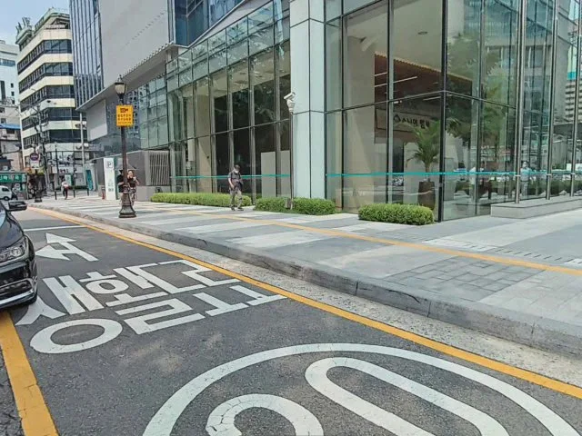
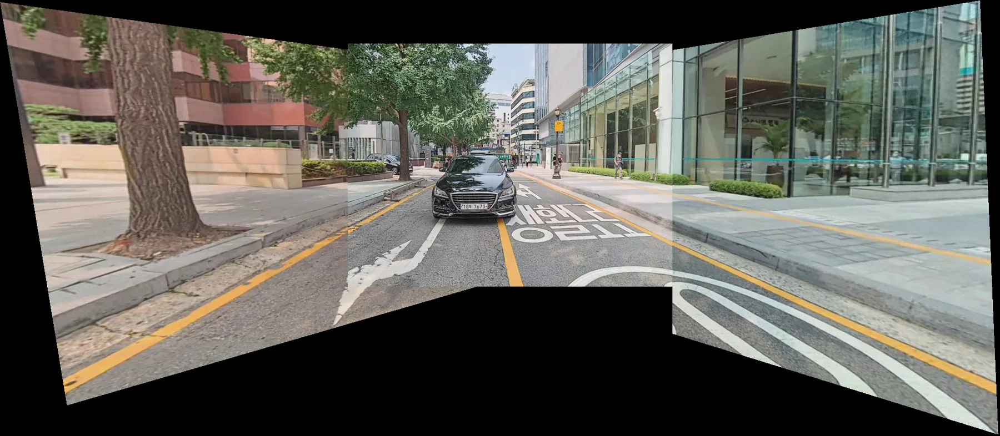
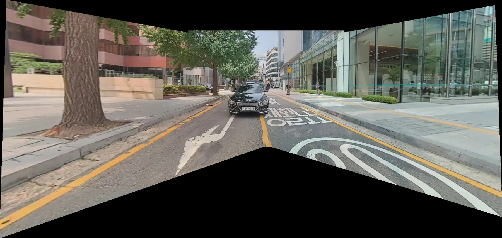

Giới thiệu
Một bằng chứng khái niệm (proof-of-concept) thực hiện ghép ảnh đa camera thời gian thực, có thể áp dụng cho Hệ thống Hỗ trợ Lái xe Tiên tiến (Advanced Driving Assistance System). Tôi là nhà phát triển duy nhất, đảm nhiệm toàn bộ từ nghiên cứu, triển khai đến kiểm thử.
Tổng quan quy trình xử lý
Quy trình ghép ảnh gồm ba giai đoạn:
- Nhận luồng đầu vào: thu khung hình từ camera/nguồn video và gộp thành lô (batch) làm đầu vào cho thuật toán ghép ảnh.
- Ghép ảnh: đăng ký (register) các tham số cache cần thiết để mỗi camera đóng góp vào phép ước lượng, sau đó tổng hợp ảnh toàn cảnh (panorama) từ lô đầu vào và các tham số đã cache đó.
- Hậu xử lý: ảnh toàn cảnh thu được sẽ được đưa vào các tác vụ phía sau — hiển thị, phát hiện đối tượng, ước lượng độ sâu, v.v.

Thuật toán ghép ảnh
Tôi đã triển khai hai thuật toán ghép ảnh: một phiên bản đơn giản với quy trình xử lý nhẹ hơn, và một phiên bản nâng cao đánh đổi độ trễ xử lý cao hơn để lấy kết quả mượt mà, tinh chỉnh hơn.

Trích xuất đặc trưng
Dùng để trích xuất danh sách đặc trưng (feature) từ mỗi ảnh đầu vào:
Khớp đặc trưng
Dùng để tìm các đặc trưng khớp nhau giữa mỗi cặp ảnh đầu vào, từ đó ước lượng ma trận homography:
- Phương pháp bình phương tối thiểu (least squares)
- Phương pháp mạnh (robust) dựa trên RANSAC (mặc định)
- Phương pháp mạnh (robust) Least-Median
- Phương pháp mạnh (robust) dựa trên PROSAC
Ma trận homography $H$ xác định phép biến đổi giữa hai mặt phẳng, sai khác một hệ số tỷ lệ:
$H$ là ma trận $3 \times 3$ với 8 bậc tự do, vì nó chỉ được ước lượng sai khác một hệ số tỷ lệ — thường được chuẩn hóa với $h_{33} = 1$.
Ba trường hợp sau đều liên quan đến phép biến đổi giữa hai mặt phẳng:



Trái → phải: mặt phẳng vật thể và mặt phẳng ảnh; mặt phẳng vật thể quan sát từ hai vị trí camera (trường hợp ghép ảnh); camera xoay quanh trục chiếu của nó — tương đương với các điểm nằm trên một mặt phẳng ở vô cực (chế độ chụp toàn cảnh trên điện thoại), trường hợp nền tảng cho việc ghép ảnh.
Demo
Đầu vào — 3 camera (gương trái, phía trước, gương phải)



Kết quả thuật toán đơn giản

Kết quả thuật toán nâng cao
